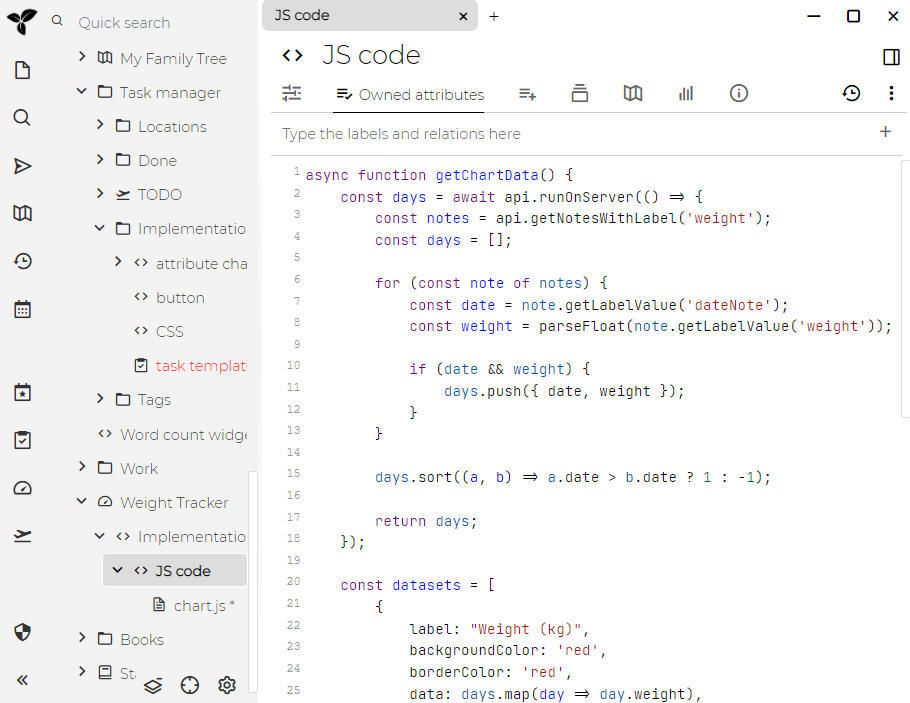
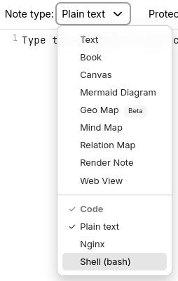

Trilium supports creating "code" notes, i.e. notes which contain some
sort of formal code - be it programming language (C++, JavaScript), structured
data (JSON, XML) or other types of codes (CSS etc.).
This can be useful for a few things:
computer programmers can store code snippets as notes with syntax highlighting
JavaScript code notes can be executed inside Trilium for some extra functionality
we call such JavaScript code notes "scripts" - see Scripting
JSON, XML etc. can be used as storage for structured data (typically used
in conjunction with scripting)
For shorter snippets of code that can be embedded in Text notes,
see Code blocks.

Adjusting the language of a code note
In the Ribbon, look for the Note type selector
and click it to reveal the possible note types. Inside of it there will
be a section called Code, select any one of the languages.

Adjusting the list of languages
Trilium supports syntax highlighting for many languages, but by default
displays only some of them. The supported languages can be adjusted by
going to Options, then Code Notes and
looking for the Available MIME types in the dropdown section. Simply
check any of the items to add them to the list, or un-check them to remove
them from the list.
Note that the list of languages is not immediately refreshed, you'd have
to manually refresh the application.
The list of languages is also shared with the Code blocks feature
of Text notes.
Word wrap
Long lines can be displayed on multiple lines:
Globally for all code notes, from Options → Code Notes.
For a particular note, by going to the menu in Note buttons and selecting Word wrap and
selecting the appropriate option:
Auto, to respect the global word wrap for code notes.
On or Off, to change the state of the word wrap for this
note regardless of the global option.
Adjusting options using the status bar
The status bar at the bottom of the editor shows the current indentation
settings and language. Clicking on the indentation indicator opens a menu
with three sections:
Indent Using — switch between Spaces and Tabs. If a per-note
override is active, a "Reset to default" option appears.
Display Width — choose from preset widths (1, 2, 3, 4,
6, 8). Changes are saved as a per-note #tabWidth label.
Re-indent Content To — convert existing indentation to
a different style. For example, re-indent a file from 4 spaces to 2 spaces,
or from spaces to tabs. This rewrites the leading whitespace on every line
while preserving alignment remainders.
Clicking the language indicator lets you change the note's MIME type.
Re-indentation
When you re-indent content, the editor:
Measures the visual column width of each line's leading whitespace using
the current style
Calculates indent levels and any alignment remainder
Rebuilds the leading whitespace in the target style
Preserves non-leading whitespace, blank lines, and content without indentation
Color schemes
Since Trilium 0.94.0 the colors of code notes can be customized by going
Options → Code Notes and looking for the Appearance section.